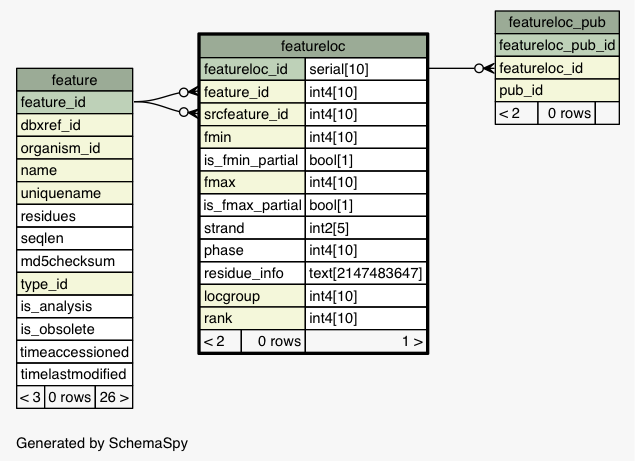
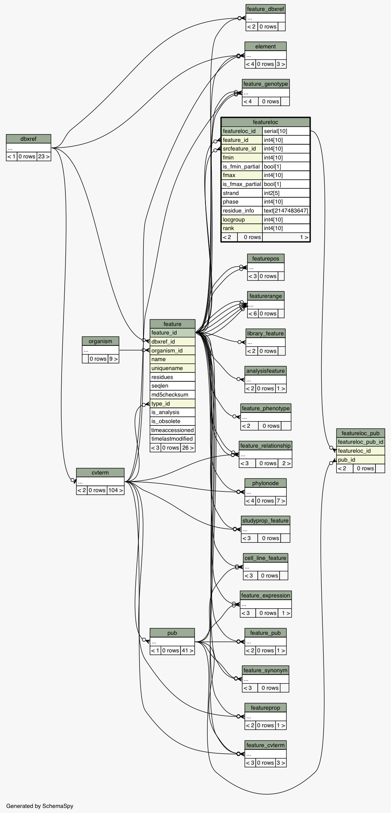

| Table dicty_chado.public.featureloc The location of a feature relative to another feature. Important: interbase coordinates are used. This is vital as it allows us to represent zero-length features e.g. splice sites, insertion points without an awkward fuzzy system. Features typically have exactly ONE location, but this need not be the case. Some features may not be localized (e.g. a gene that has been characterized genetically but no sequence or molecular information is available). Note on multiple locations: Each feature can have 0 or more locations. Multiple locations do NOT indicate non-contiguous locations (if a feature such as a transcript has a non-contiguous location, then the subfeatures such as exons should always be manifested). Instead, multiple featurelocs for a feature designate alternate locations or grouped locations; for instance, a feature designating a blast hit or hsp will have two locations, one on the query feature, one on the subject feature. Features representing sequence variation could have alternate locations instantiated on a feature on the mutant strain. The column:rank is used to differentiate these different locations. Reflexive locations should never be stored - this is for -proper- (i.e. non-self) locations only; nothing should be located relative to itself.
|
Generated by SchemaSpy |
| |||||||||||||||||||||||||||||||||||||||||||||||||||||||||||||||||||||||||||||||||||||||||||||||||||||||||||||||||||||||||||
Table contained 0 rows at Fri Jun 06 11:08 CDT 2014 | |||||||||||||||||||||||||||||||||||||||||||||||||||||||||||||||||||||||||||||||||||||||||||||||||||||||||||||||||||||||||||
Indexes:
| Column(s) | Type | Sort | Constraint Name |
|---|---|---|---|
| featureloc_id | Primary key | Asc | featureloc_pkey |
| feature_id + locgroup + rank | Must be unique | Asc/Asc/Asc | featureloc_c1 |
| feature_id | Performance | Asc | featureloc_idx1 |
| srcfeature_id | Performance | Asc | featureloc_idx2 |
| srcfeature_id + fmin + fmax | Performance | Asc/Asc/Asc | featureloc_idx3 |
|
  |